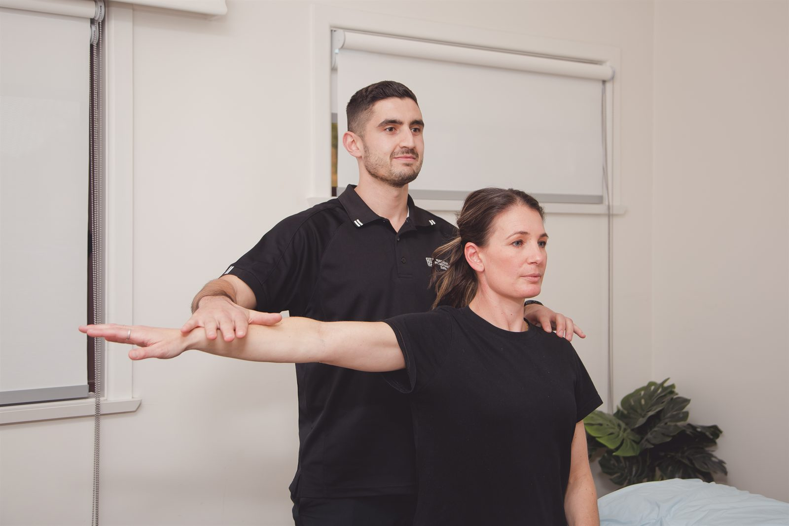

We assess, treat and manage bone, joint, tendon, muscle and nerve-related injuries. If pain or restricted movement is affecting your day, we can help you understand the problem and work out the next steps.

You can see us for an injury that happened recently, pain that has developed gradually, or a problem that keeps returning. General physiotherapy covers concerns from everyday activities as well as work, exercise and sport.
If you suspect a broken bone, seek immediate assessment from a doctor or emergency department. Do not wait for a routine physiotherapy appointment. Healthdirect explains when to seek urgent help for a fracture.
We will ask when your symptoms began, what changes them and which activities you are finding difficult. Tell us about previous injuries, relevant health conditions and any treatment you have already tried.
The physical assessment depends on your symptoms. It may include checking movement, strength, joint function or nerve-related signs. We explain what the findings suggest and whether physiotherapy is appropriate. If you need medical review or further investigation, we will discuss that with you.
Bring any relevant scans or medical letters, and wear clothing that allows the affected area to be examined.
Treatment may include hands-on techniques, exercises to restore movement or strength, and advice about adjusting activities while the injury settles. We discuss the options with you before starting. Dry needling may be offered where appropriate and with your consent.
Your goals might be lifting at work, walking the dog, getting dressed without shoulder pain or returning to the gym. These help us choose exercises and decide how to measure progress.
At follow-up appointments, we review your symptoms and what you can do, then adjust the plan. Recovery time and the number of visits depend on the injury, your health and how you respond.
Appointments are available at our Dapto clinic, inside Dapto Medical Professionals. See fees and rebates for payment options, or contact the clinic about home visits or telehealth.
Hands-on treatment and targeted exercise for back and neck pain.
Read moreServiceDiagnosis, treatment and staged return-to-sport rehabilitation for athletes at every level.
Read moreServiceDiagnosis, load management and a staged return-to-running plan for runners of every level.
Read moreTell us what is bothering you and what you would like to get back to. Book online or call the Dapto clinic.